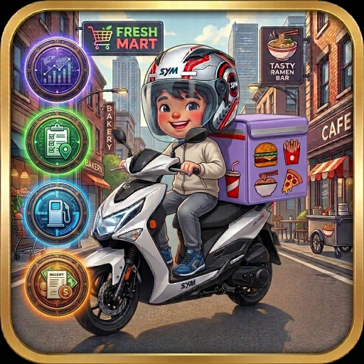

精準掌握每一分收入，自動計算時薪與達標進度。支援油耗計算、保養時間軸，讓跑單更有感！
馬上免費使用 🚀支援 Uber Eats、foodpanda、foodomo 及現金小費記錄

這不只是一個記錄工具，更是您的外送分析師
自動計算單均、時薪，並內建「基本工資警示」標籤。輕鬆查看日、週、月、年趨勢與佔比圖表。
不再手動算單數！設定好熊貓週循環獎勵階距，輸入單數時系統將「自動」幫您帶入達標獎金。
支援汽油車與電動車。內建油耗計算、全域最新油價，並提供精美的「保養維修時間軸」搜尋功能。
資料存於手機本機，支援一鍵備份或背景雲端同步。登入採用 PBKDF2 軍規級密碼加密，隱私有保障。
我們知道外送收入結構複雜，包含行程費、達標獎金、天氣獎勵及客人小費。系統會自動幫您拆解「淨行程佔比」，並直接告訴您當下有沒有賺到基本時薪。
跑外送最怕車子出狀況！APP 內建完整的車庫管理，無論您是騎 Gogoro 還是油車，都能完美適配。
支援 PWA 漸進式網頁應用技術，Safari / Chrome 直接「加到主畫面」即可像 APP 一樣使用！
開始記錄我的外送日常